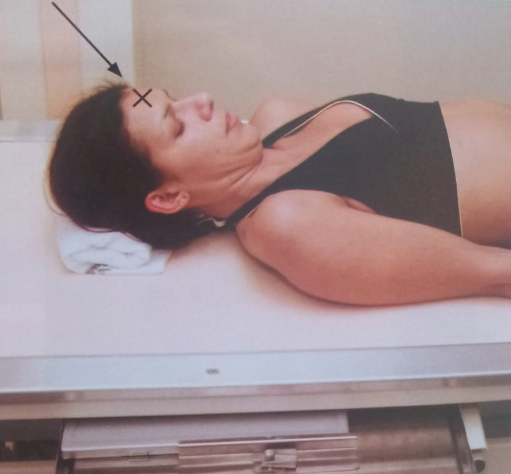
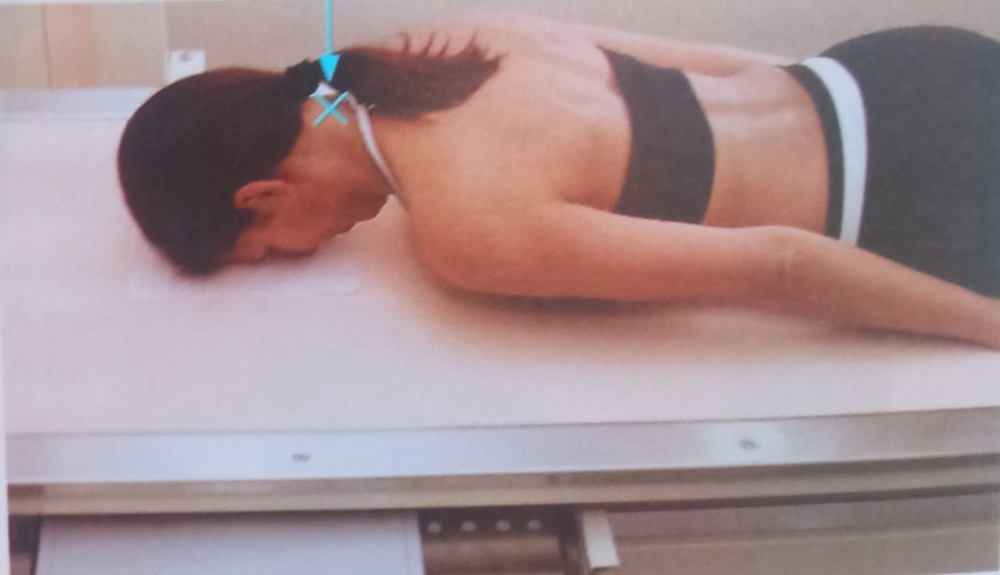
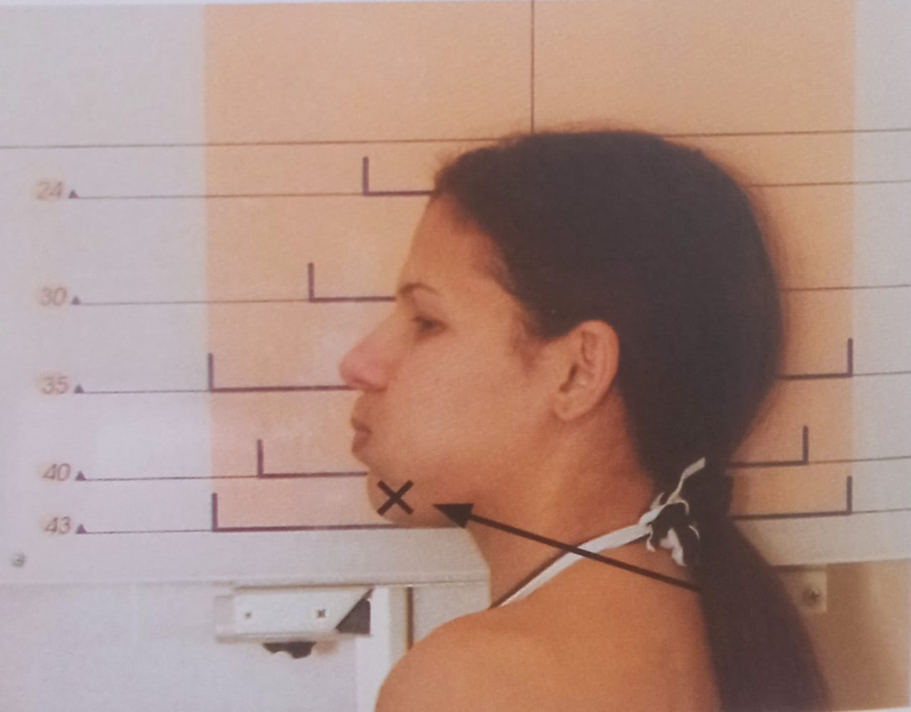
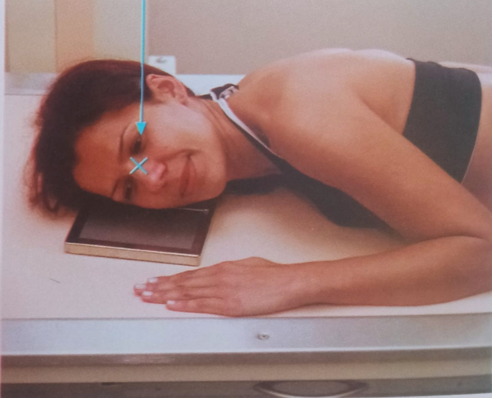
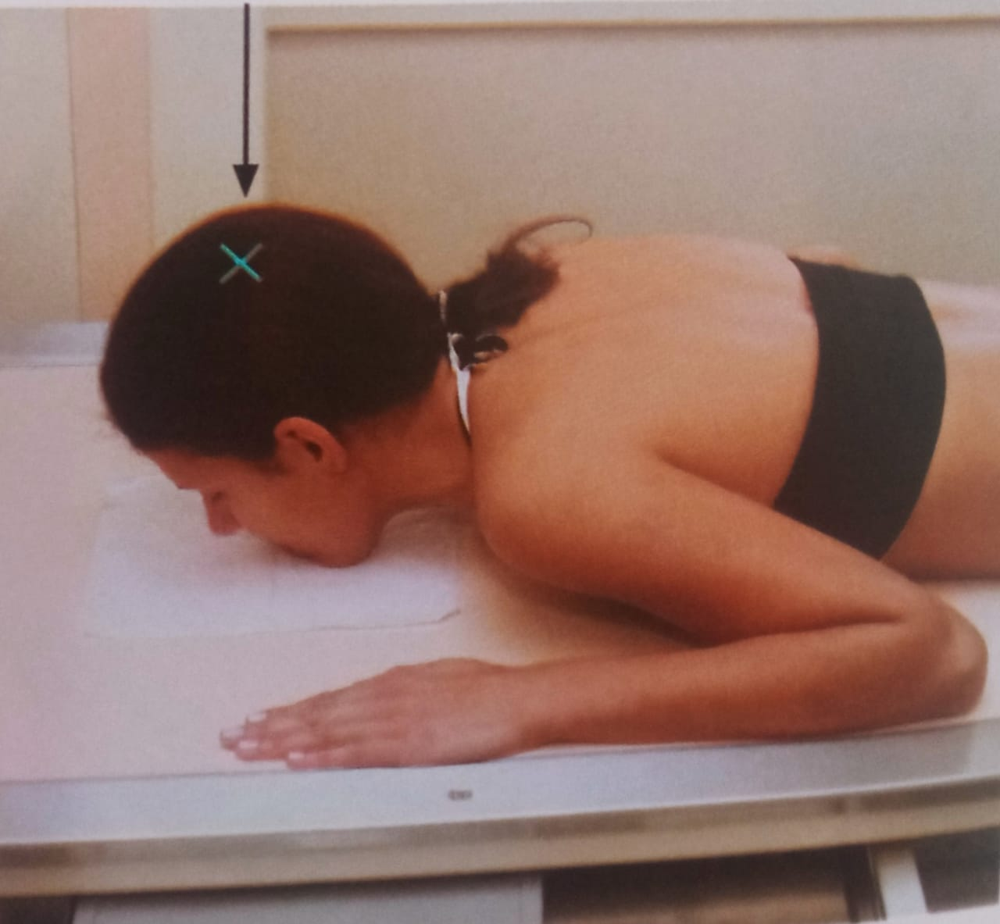
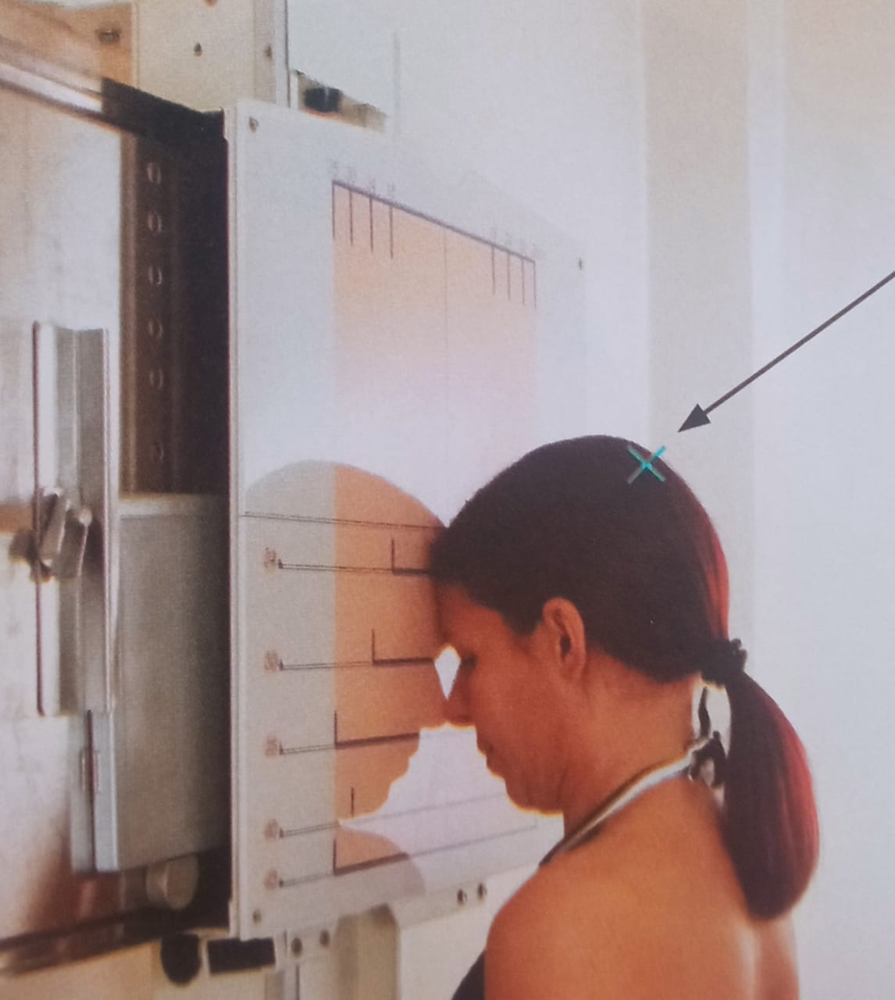
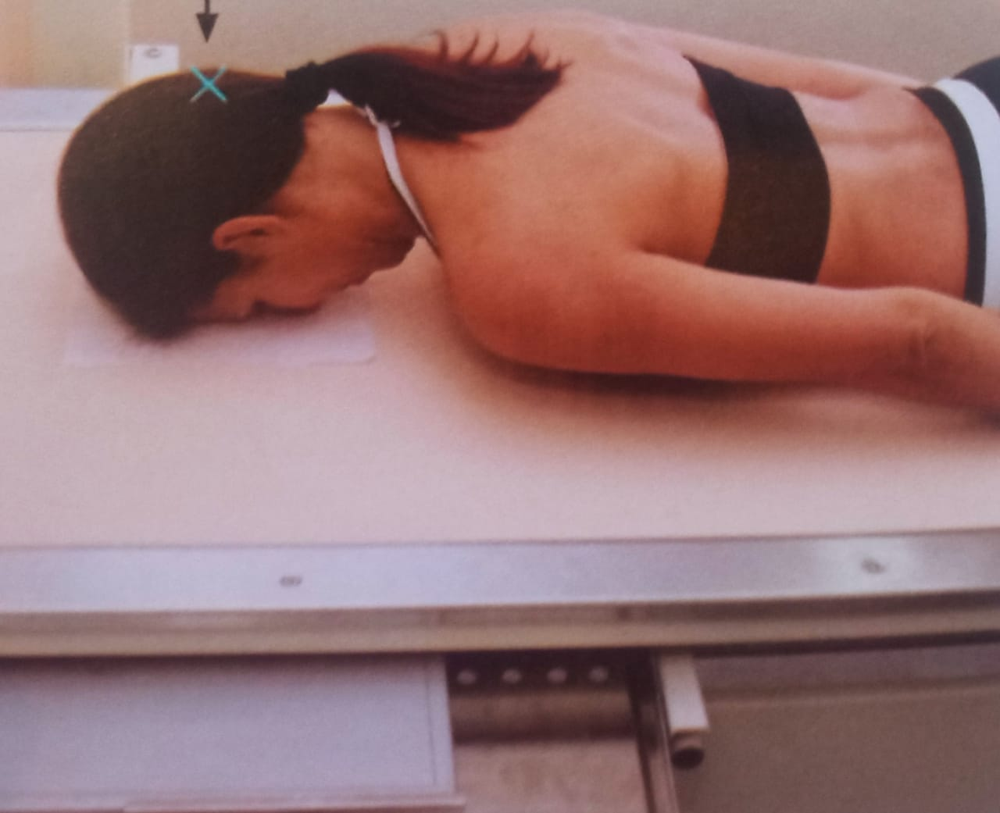
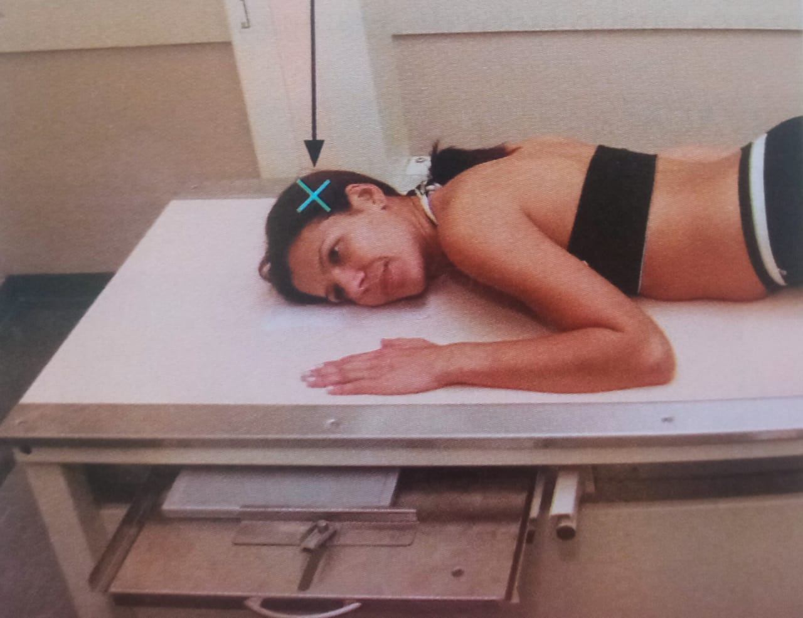
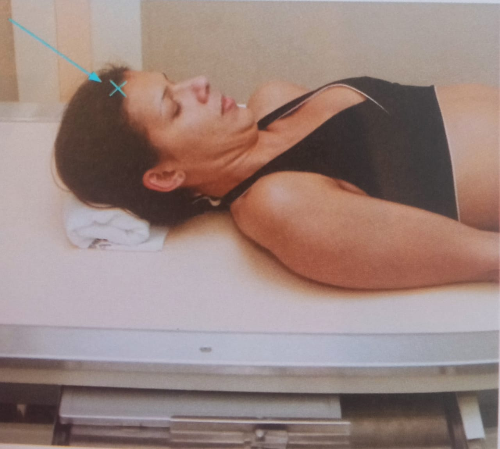

HOME
POSICIONAMENTOS
SOBRE
LIVRO VIRTUAL



Incidência AP axial: Mandíbula- Método de Towne
Incidência PA ou AP axial- Mandíbula
Incidência axial Lateral Mandíbula



Posição Lateral: Ossos Nasais
Incidência parietoacantial- Método de Waters
Incidência em PA axial: Método dec Caldwell



Incidência PA
Posição Lateral
Incidência AP- Método de Towne
* TODAS AS INFORMAÇÕES DESSE SITE FORAM RETIRADAS DO "MANUAL DE POSICIONAMENTOS RADIOLÓGICOS", AUTORES FRANCISCO FEITOSA E RENATO FERNANDES.